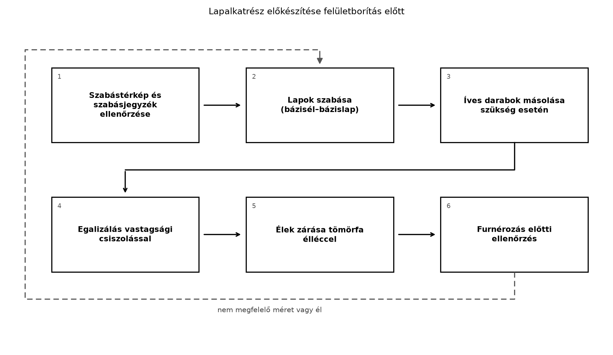

Egy megrendelő furnérozott irodai asztallapot kér, amelynek a szabad éle tölgyfurnérral borított. A műhelyben a munkatárs leszabja a nyers forgácslapot, de kihagyja az élzárást. A préseléskor a ragasztó beszívódik a porózus, szálkás forgácslapélbe, a furnér az élnél nem tapad, és felhólyagosodik. A reklamáció tanulsága: a lapalkatrészt nem elég leszabni, a felületborítás előtt egalizálni és az éleket lezárni is kell. Ebben az alfejezetben azt tanuljuk meg, hogyan kell a lapalkatrészeket a szabástérkép alapján, a szálirányt betartva szabni, a leszabott lapot egalizálni, majd az éleket felületborítás előtt tömörfa élléccel zárni.
A gyártási folyamatot az alábbi ábra foglalja össze:

A folyamat lényege: rajz–anyag–művelet hármas. A szabásjegyzékből tudjuk a kész méretet, a szabástérképből a szálirányt és a vágási sorrendet, a technológiai lapból pedig a gép beállításait. Minden darabot úgy készítünk elő, hogy a furnérozásnál a felület sík, az él tömör és a ragasztó egyenletesen tudjon megkötni.
Definíció. Lapalkatrész-szabás: faalapú lapanyagból (forgácslap, MDF, bútorlap, rétegelt lemez, bevont lap) a szabásjegyzék szerinti méretre vágás, a szabástérképen megadott szálirány, vágásszélesség és szélezési ráhagyás betartásával.
Definíció. Egalizálás: a leszabott lap vastagsági csiszolása, amellyel a lap két oldalát egyenletes, sík felületűvé, a vastagságot pontos méretűvé tesszük a felületborítás előtt.
Definíció. Éllécezés: a lap élére tömörfa léc ragasztása, amely az élt tömörré, teherbíróvá teszi, és lehetővé teszi, hogy a furnér vagy fólia az élre ráfordulhasson.
Definíció. T-léc: olyan műanyag élzáró profil, amelynek keresztmetszete T alakú. A keskeny szára a lap élébe mart horonyba illeszkedik, a széles feje pedig az élt fedi le. Anyaga leggyakrabban PVC, ABS vagy PP. A feje a lap teljes vastagságát, a borítást is fedi, ezért felületborítás után, kész élzáróként kerül fel (pl. asztallap, munkalap); furnérozás előtt nem használható, mert a furnér nem fordulhat rá, és a ragasztó a műanyagon nem tapad.
Szabály. A lapalkatrészt mindig a bázisél–bázislap elv szerint méretezzük. Először kijelöljük a lap egyik egyenes, derékszögű sarkát, és onnan mérünk minden vágást. A szabásjegyzékben megadott méret a kész méret; a ráhagyást (szélezés, csiszolás, élzárás) a technológia szerint hozzáadjuk. A bázisélt a tábla hosszabbik, a gyártás során megmunkált egyenes éle adja, a bázislap a munkadarab kijelölt, sík referencia-felülete: a gépen ez fekszik az asztalon, ehhez igazítjuk a megmunkálást és a vastagság mérését.
Szabály. A szálirányt mindig a szabástérképen jelzett módon kell tartani. Bútorlapnál a lécbetét iránya, rétegelt lemeznél a felső furnérréteg rostiránya, dekorbevonatú lapnál a minta iránya a meghatározó. A hibásan forgatott alkatrész esztétikailag és mérettartás szempontjából is rossz.
A lapszabászat gépeit a Lapszabászgépek, táblafelosztók és a fűrészelési hibák alfejezet már bemutatta. Itt a lapalkatrészekre alkalmazzuk: a cél nem csupán a méretre vágás, hanem az, hogy a darab készen álljon a furnérozásra, élzárásra.
A leggyakoribb technológiák:
Lécbetétes és felületkezelt lapok szabása. A bútorlap lécbetétes: középső rétege egymáshoz ragasztott tömörfa léc, felülete vékony furnér. A léc iránya a tábla hosszával párhuzamos. Az alkatrészt úgy kell szabni, hogy a hosszabbik mérete essen a léc irányába; így a lap síkjában a méretváltozás kisebb, és a szilárdság is jobb. A rétegelt lemez felületi furnérjai egymásra merőlegesek; a szabásjegyzékben általában a látható oldal rostiránya szerepel. A felületkezelt (melaminbevonatú, HPL, CPL) lapoknál a dekor iránya a döntő, hogy a futtatott faminta vagy a fény iránya minden látható felületen azonos legyen.
Faforgácslapok szabása. A forgácslapnak nincs hagyományos száliránya, de a felületi dekor és a gyártásból adódó belső szerkezet miatt a táblát a szabástérképen jelölt irányban kell megfogni. A forgácslap széle porózus, ezért az élzárásra különösen érzékeny. Vágásnál kötelező az elővágó használata, amely a felső rétegből vékony sávot vág le, és így a fő fűrészlap kitörésmentes élt ad. A tompa fűrészlap, a rosszul beállított elővágó az élen kagylós kitörést okoz, amit a ragasztó nem tud kitölteni.
Íves felületek méretre alakítása. Ha a lapalkatrész íves (pl. asztallap sarka, háttámla ívelt eleme), akkor először a külső befoglaló téglalapra szabjuk, majd a végleges ívet kialakítjuk. Az íves vágás módjai:
A sablonos másolásnál a munkadarabot és a sablont gyorsszorítóval vagy kétoldalas ragasztóval rögzítjük, és a marót a sablon élére támasztva, egyenletes előtolással vezetjük. A forgácsolás iránya ellenirányú legyen, hogy a maró ne rántsa el a darabot.
A leszabott lapalkatrész vastagsága gyártási tűrés miatt 0,2–0,5 mm-rel is eltérhet, a felülete pedig a tárolás, szállítás során enyhén hullámossá válhat. A furnérozás vagy fóliázás előtt a lapot vastagsági csiszológéppel egalizáljuk. A széles szalagú csiszológép a lap mindkét oldalát egyenletesen csiszolja, és a vastagságot a kívánt méretre hozza.
Technológiai lépések:
Gépbiztonság. A vastagsági csiszológépet csak betanított tanuló, felügyelet mellett kezeli. Indítás előtt: elszívás be, a szalag feszessége és futása rendben, a vészleállító kipróbálva. A gépbe csak a gépkönyv szerinti legkisebb hossznál hosszabb darabot adj; a kezed ne kerüljön az előtoló szalag és a felső nyomópofa közé; a gép kifutási oldalán ne állj. Kesztyűt ne viselj. A porgyűjtőt rendszeresen ürítsd (tűz- és porrobbanás-veszély), viselj fülvédőt és porvédelmet (ellenőrizendő: gépkönyv, MSZ EN ISO 19085 vonatkozó része).
Megjegyzés (sorrend). Tömörfa éllécnél a ragasztás után a léc kissé kiáll a lap síkjából. Ipari gyakorlatban gyakori sorrend: szabás, éllécezés, egalizálás (kalibrálás), furnérozás; ebben az alfejezetben a lapot előbb egalizáljuk, a lécet pedig kézzel hozzuk síkba (kis műhely, nincs csiszológép az éllécezés után) (ellenőrizendő: műhelyi gyakorlat). Megjegyzés. A vastagsági csiszológép beállítása gyártónként eltér; a fogásonkénti levétel, a szalagsebesség és az előtolás a gépkönyv és a csiszolószalag gyártói adatai szerint választandó (ellenőrizendő: gépkönyv, szerszámkatalógus).
Az egalizált lap élei továbbra is porózusak (főleg forgácslapnál). A felületborítás előtt az éleket le kell zárni, hogy a furnér vagy fólia ragasztója ne szívódjon be, és az él a készterméken is tartós, esztétikus legyen. Két alapvető megoldás:
Éllécezés. Az élléc anyaga általában tömörfa (pl. bükk, tölgy, fenyő), mérete az alkatrész vastagságától függ (pl. 20 mm vastag laphoz 20 × 8 mm-es léc). A lépések:
Beeresztett (horonyba illesztett) tömörfa élléc. Forgácslap, MDF vagy rétegelt lemez élére tömörfa lécet is beeresztünk: a lap élébe horony, a lécre féder kerül. Ez felületborítás előtt is alkalmas élzárás, mert a léc a lap síkjába gyalulható, és a furnér ráfordulhat. A lépések:
T-léc (felületborítás után). A műanyag T-lécet a kész, borított lap élére tesszük: a lapba mart horonyba (pl. 2 mm széles) nyomjuk vagy ragasztjuk, és a fejét a lap síkjához igazítjuk. Furnérozás előtti élzárásra nem alkalmas (lásd a 27.4 alfejezetet).
Az ábra szerint a tömörfa élléc a furnér alá kerül: a lécet a lap síkjába gyaluljuk, és a furnér a lécet is takarja. A HTML-kiadásban a lépések (szabott lap, horonymarás, ragasztó, léc és szorítás, síkba gyalulás, furnérozás) egyenként lejátszhatók.
Figyelem. Az élzáráshoz használt ragasztóknál mindig a biztonsági adatlap az irányadó. A PUR ragasztó izocianátot tartalmazhat, ezért kesztyű, védőszemüveg és légzésvédelem szükséges; a PVAc ragasztó vizes, de a szorítási idő alatt a munkadarabot rögzíteni kell.
Szabály. Az éllécet (és a felületborítás utáni T-lécet) úgy kell illeszteni, hogy a ragasztó folytonos legyen, ne legyen hézag. A préselés után a kinyomódó felesleget azonnal töröljük le nedves ruhával (PVAc) vagy száraz ruhával (PUR, a gyártó szerint), mert a megkötött felesleg csiszolása bordát hagy.
Minden gyártás előtt a gép mellett ellenőrizzük a szabásjegyzéket és a szabástérképet. Az ellenőrzőlista:
Példa 1 – Sávok száma és vágásszélesség.
Egy 2800 × 2070 mm-es forgácslaptáblából keresztirányban, a 2800 mm-es
hossz mentén vágunk 300 mm széles (2070 mm hosszú) sávokat. A fűrészlap
vágásszélessége 4 mm. Hány teljes sáv fér ki, és mennyi maradék
keletkezik?
Megoldás.
Legyen a sávszélesség
,
a vágásszélesség
.
A tábla hossza
.
Ha
sávot vágunk, és marad még maradék is, akkor minden sávot el kell
választani a következőtől és a maradéktól is, tehát
vágás van:
Helyettesítsünk be:
Tehát legfeljebb
teljes sáv fér ki. A felhasznált szélesség:
A maradék szélesség:
Ellenőrzés: 9 sáv és 9 vágás összesen 2700 + 36 = 2736 mm; 2800-ból
marad 64 mm. Megjegyzés. Szélezés esetén a tábla
mindkét végéből 5–10 mm-t levágunk (tájékoztató, ellenőrizendő), ami
tovább csökkenti a maradékot. ∎
Példa 2 – Élzáró anyagszükséglet.
Egy irodai polc kész mérete 720 × 300 × 18 mm. A kész, borított polc
mind a négy élét T-léccel zárjuk. Hány folyóméter T-léc kell 10
darabhoz, ha 5 % ráhagyással számolunk?
Megoldás.
Egy polc kerülete:
10 darabhoz:
Ráhagyás 5 %:
Kerekítve 21,5 folyómétert érdemes rendelni.
Ellenőrzés: 10 polc egyenként 2 méter körüli él, az 20 m; a 21,5 m
reális. ∎
Példa 3 – Egalizálás vastagsági mérete.
A nyers forgácslap vastagsága 19,2 mm, a kész polc vastagsága 18,6 mm.
Mennyit kell csiszolni mindkét oldalról egyenletesen?
Megoldás.
A teljes levett vastagság:
Mivel két oldalról egyformán csiszolunk, oldalanként:
Ellenőrzés: 2 × 0,3 = 0,6; 19,2 − 0,6 = 18,6 mm. ∎
Szabvány. A lapszabászat, egalizálás és élzárás során az alábbi szabályozási területek érvényesek:
Cím: Éllécezés felületborítás előtt – tömörfa élléc
ragasztása forgácslap élére
Termék/alkatrész: 720 × 300 × 18 mm-es polclap,
furnérozandó, mindkét hosszanti éle zárt.
Anyag: forgácslap P2, nyers vastagság 18,6 mm (kész
vastagság 18,0 mm); élléc bükk 18 × 8 mm; PVAc ragasztó (D2) belső
használatra.
Gépek és szerszámok: táblafelosztó vagy asztalos
körfűrészgép, vastagsági csiszológép, egyengető gyalu (a léc
simításához), szorítók, csiszolópapír 120-as, ragasztóterítő vagy
fogazott spatula, mérőszalag, derékszög, tisztító kendő.
Gépbiztonság. A művelet betanított, felügyelt tanulónak szól; védőberendezés nélkül, egyedül, fáradtan ne végezd. A gépeken a védőburkolat, elszívás, a fűrészlap/gyalukés állapota ellenőrzött. Kesztyűt forgó szerszámnál ne viselj; a ragasztáshoz azonban használj védőkesztyűt. Egyéni védőeszköz: védőszemüveg, fülvédő, légzésvédelem (porképző műveletnél FFP2), munkaruha.
Indítás előtti ellenőrzés:
1. Szerszám állapota, rögzítése, megengedett fordulatszám.
2. Védőburkolatok, elszívás bekapcsolva.
3. A munkadarabon nincs szeg, csavar, laza göcs, repedés.
4. Vészleállító elérhető.
Számozott lépések:
| Ellenőrzési pont | Módszer | Előírt/tájékoztató tűrés |
|---|---|---|
| Hossz, szélesség | mérőszalag, acélvonalzó | ±0,5 mm (tájékoztató) |
| Vastagság | tolómérő 5 ponton | ±0,2 mm (tájékoztató) |
| Derékszög | derékszög, átlómérés | átlóeltérés ≤1 mm 500 mm-en (tájékoztató) |
| Él egyenesség | acélvonalzó, résmérték | max. 0,2 mm hézag (tájékoztató) |
| Ragasztási hézag | szemrevételezés, hézagmérő | nincs folytonos hézag |
| Felület pormentessége | fehér kesztyű, ragasztószalag-teszt | pormentes, zsírmentes |
| Szálirány | összehasonlítás a szabástérképpel | megegyezik a rajzi jelöléssel |
Eltérésnél: ha a méret túllépi a tűrést, a darabot újra kell szabni vagy korrigálni; ha az él hézagos, a ragasztást el kell távolítani, az élt újra simítani és ismét ragasztani.
1. Hiba: kitörés a fűrészelt élen.
Tünet: a lap élén kagylós, kihullott részek. Ok: tompa fűrészlap,
rosszul beállított elővágó, túl gyors előtolás. Helyes gyakorlat: éles,
megfelelő fogszámú fűrészlapot használjunk, az elővágót állítsuk be,
lassítsuk az előtolást. A hibás élt gyalulni vagy tömíteni kell az
élzárás előtt.
2. Hiba: az élléc lepattan vagy hézagos.
Tünet: a léc a lap éléről részben elválik, a ragasztóréteg megszakad.
Ok: túl kevés ragasztó, túl rövid szorítási idő, zsíros vagy poros él.
Helyes gyakorlat: az élt csiszoljuk, a ragasztót egyenletesen, a gyártói
szorítási időt betartva dolgozzunk.
3. Hiba: a T-léc kinyúlik vagy beül a felület
alá.
Tünet: a T-léc feje a lap síkjából kiemelkedik, vagy a horonyban ferde.
Ok: rossz horonymélység, nem passzentos T-léc, egyenetlen nyomás a
beillesztéskor. Helyes gyakorlat: a hornyot méretre marjuk, a T-léc
lábát és fejét ellenőrizzük, a beillesztést egyenletes, a lap síkjára
merőleges nyomással végezzük.
4. Hiba: a szálirány tévesztés.
Tünet: a furnér mintája oldalanként eltér, vagy a lap a szárítás után
görbül. Ok: a szabástérkép jelölését figyelmen kívül hagyták, a táblát
forgatták. Helyes gyakorlat: a gépnél a befűzés előtt meg kell egyeznie
a tábla szálirányának és a térkép nyilának.
Egy kis műhelyben egy megrendelő tölgy furnérral borított asztallapot kért, ahol az asztallap két hosszanti éle tömör tölgy élléccel készül. A munkatárs a forgácslapot leszabta, de az egalizálást kihagyta, és az éllécet közvetlenül a fűrészelt, porózus felületre ragasztotta. A furnér préselésekor az élléc mentén a furnér két helyen felhólyagosodott: a ragasztó a forgácslap élen nem tudott egyenletes filmet képezni, és a furnér alá levegő szorult. A reklamáció során a lapot vissza kellett bontani, az élt megtisztítani, a lapot egalizálni, majd új, szakszerűen ragasztott élléccel ellátni. A tanulság: az élzárás és az egalizálás nem választható el a szabástól; a felületborítás minősége az előkészítésen dől el.
1. feladat (A)
Definiáld az egalizálást és az élzárást
felületborítás előtt! Miért van szükségük forgácslap
esetén?
2. feladat (A)
Egy lap 19,4 mm vastag nyers forgácslapból készül. A kész vastagság 18,4
mm. Mennyit kell oldalanként csiszolni, ha a két oldalról egyenlő
mennyiséget veszünk le?
3. feladat (B)
Egy szabásjegyzékben az alábbi sor szerepel: „Ajtóbetét, 1 db,
forgácslap P2, szabási méret 712 × 296 × 18 mm, kész méret 712 × 296 ×
18 mm, két hosszanti élén 8 mm vastag élléccel.” Azonosítsd a hibát!
Milyen szabási méretnek kellene szerepelnie?
4. feladat (B)
Készíts műveletsort egy íves asztalka „saroklemez” alkatrészének
elkészítéséhez, ha a sablont már elkészítettük. Sorold fel a gépeket,
szerszámokat és az ellenőrzési pontokat!
5. feladat (C)
Egy furnérozandó konyhai munkalap hátsó élét, a mosogató felőli nedves
oldalon kell zárni. Válassz a tömörfa élléc és a műanyag T-léc között,
és indokold: melyik és mikor kerülhet fel a furnérozás előtt, melyik
után? Milyen ragasztót használnál?
6. feladat (D)
Tervezz meg egy ellenőrzési jegyzőkönyvet egy 1200 × 400 × 18 mm-es
nyers forgácslap furnérozás előtti átvételéhez. A jegyzőkönyv
tartalmazza a méreteket, derékszöget, élminőséget, felület tisztaságát,
és határozd meg a tűréseket (tájékoztató).
Önellenőrzés – válaszok
Hamis. A forgácslapnak ugyan nincs természetes száliránya, de a felületkezelt lapokon a dekor, a bútorlapon a lécbetét iránya, a rétegelt lemezen a felső furnér iránya meghatározza a szálirány-jelölést. A szabástérképen mindig jelölni kell a befűzési irányt.
Egy ajtóbetét kerülete:
3 darabhoz:
.
10 % ráhagyással:
.
Kerekítve 9,3 fm éllécet kell előkészíteni.
A T-léc lába hosszabb, mint a horony mélysége. A T-léc feje nem fog felfeküdni az élre, kilóg, vagy a láb az aljába ütközik. A hornyot 8 mm mélyre kell martani vagy a T-lécet másik, rövidebb lábú típusra cserélni.
Az elővágó a bevonat felső rétegéből vékony sávot vág le, megakadályozva, hogy a fő fűrészlap felfelé kitörje a dekorréteget. Kitörés nélküli, tiszta élt ad, ami az élzárás és a furnérozás alapfeltétele.
Az élléc tömörfa léc, amelyet a lap élére ragasztunk vagy beeresztünk; furnérozás előtt kerül fel, a furnér ráfordulhat. A T-léc műanyag profil, amelyet a lap élébe mart horonyba illesztünk; a felületborítás után, kész élzáróként kerül fel, a furnér nem fordul rá.
A sorrend: szabástérkép ellenőrzése, lapok szabása, (szükség esetén íves másolás), egalizálás, élek zárása, furnérozás előtti ellenőrzés.
1. feladat (A)
Az egalizálás a leszabott lap vastagsági csiszolása,
amely a lap két oldalát síkra, azonos vastagságra hozza. Az
élzárás felületborítás előtt a lap élének lezárása
tömörfa élléccel, mielőtt furnér vagy fólia kerül a felületre.
Forgácslapnál azért szükséges, mert az él porózus, a ragasztót beszívja,
a furnér nem tapad, és a lap sérülékeny.
2. feladat (A)
A teljes levett vastagság:
.
Oldalanként:
.
Tehát oldalanként 0,5 mm-t kell csiszolni.
3. feladat (B)
A hiba: a szabási méretből nem vonták le az éllécet. A kész méret 712 ×
296 mm, a két hosszanti élén 2 × 8 mm élléc kerül, ezért a lapot 712 ×
(296 − 2 · 8) = 712 × 280 mm-re kell szabni. A helyes sor: „Ajtóbetét, 1
db, forgácslap P2, szabási méret 712 × 280 × 18 mm, kész méret 712 × 296
× 18 mm, élléccel 2 × 8 mm”. A sorrend hossz × szélesség ×
vastagság.
4. feladat (B)
Műveletsor:
Ellenőrzési pontok: a sablon rögzítése nem mozdul, a maró csapágya a sablonon fut, az ív sugara megegyezik a rajzzal, az él kitörésmentes.
5. feladat (C)
Furnérozás előtt csak tömörfa élléc jöhet szóba: a hátsó élre D3/D4
osztályú vagy PUR ragasztóval ragasztott tömörfa élléc kerül, amelyet a
lap síkjába gyalulunk, majd a furnér vagy HPL ráfordul. A műanyag T-léc
nem megfelelő furnérozás előtt: a feje kilóg a lap síkjából, a furnér
nem fordulhat rá, és a ragasztó nem tapad rajta. Ha műanyag élzárást
szeretnénk, a T-lécet a felületborítás után tesszük fel a kész élre;
ragasztása PUR vagy nedvességálló PVAc (D3/D4) a gyártói adatlap szerint
(ellenőrizendő).
6. feladat (D)
Ellenőrzési jegyzőkönyv (minta):
| Ellenőrzési pont | Módszer | Előírt/tájékoztató tűrés | Megfelelőség |
|---|---|---|---|
| Hossz 1200 mm | mérőszalag | ±0,5 mm | |
| Szélesség 400 mm | mérőszalag | ±0,5 mm | |
| Vastagság 18 mm | tolómérő 5 ponton | ±0,2 mm | |
| Derékszög | átlómérés | eltérés ≤1 mm | |
| Élek | szemrevételezés, acélvonalzó | egyenes, kitörésmentes, max. 0,2 mm hézag | |
| Felület | fehér kesztyű, ragasztószalag-teszt | pormentes, zsírmentes, sík | |
| Szálirány | összevetés a szabástérképpel | megegyezik a jelöléssel |
A jegyzőkönyv soronként kitöltendő, a megfelelő mezőbe pipa vagy „nem felel meg”. Eltérésnél a darabot félre kell tenni, és a technológiában meghatározott javítást elvégezni.
A lapalkatrész-előkészítés a lapanyag szabásából, egalizálásából és az élek felületborítás előtti lezárásából áll. A szabást a Szabásterv és szabástérkép, anyagkihozatal elvei szerint, a bázisél–bázislap szabályt követve végezzük, a szálirányt a szabásjegyzékben és a szabástérképen megadottak szerint tartva. Forgácslapnál, bútorlapnál és bevont lapnál az él minősége kritikus, ezért elővágót használunk. A leszabott lapot vastagsági csiszolással egalizáljuk, hogy sík, pontos vastagságú, furnérozásra alkalmas felületet kapjunk. Végül az éleket furnérozás előtt tömörfa élléccel zárjuk (a műanyag T-léc a felületborítás utáni élzáró), hogy a felületborító anyag ragasztója ne szívódjon be, és a késztermék élén is tartós legyen. Az íves alkatrészeket sablonnal, felsőmaróval vagy CNC-vel alakítjuk ki. Továbbvitt eredmény: az itt előkészített lapokra kerül a furnér a Furnér szabása, illesztése és táblásítása; furnérteríték alfejezetben, ezért az élzárás és az egalizálás minősége közvetlenül meghatározza a furnérozott felület végeredményét.
Forrástípusok: faalapú lapok szabványai (MSZ EN 312,
MSZ EN 622, MSZ EN 13986), faipari gépek biztonsági előírásai (MSZ EN
ISO 19085 sorozat), ragasztógyártók műszaki és biztonsági adatlapjai,
élézáró profilok gyártói katalógusai, szakkönyvi táblázatok a szabási
ráhagyásról és az élzárásról.
Ellenőrizendő pontok: a konkrét lapanyagok vastagsági
tűrése; a táblafelosztó gép vágásszélessége; a vastagsági csiszológép
fogásonkénti levételre vonatkozó adata; a T-léc horony mérete; a
ragasztók vízállósági osztályai (D1–D4) és a szorítási idők; a faipari
gépek biztonsági szabványainak aktuális száma; a por- és
formaldehid-határértékek. Az összes technológiai paraméter tájékoztató
jellegű, éles gyártásnál mindig a gépkönyv, a gyártói adatlap és a
hatályos szabvány a mérvadó.